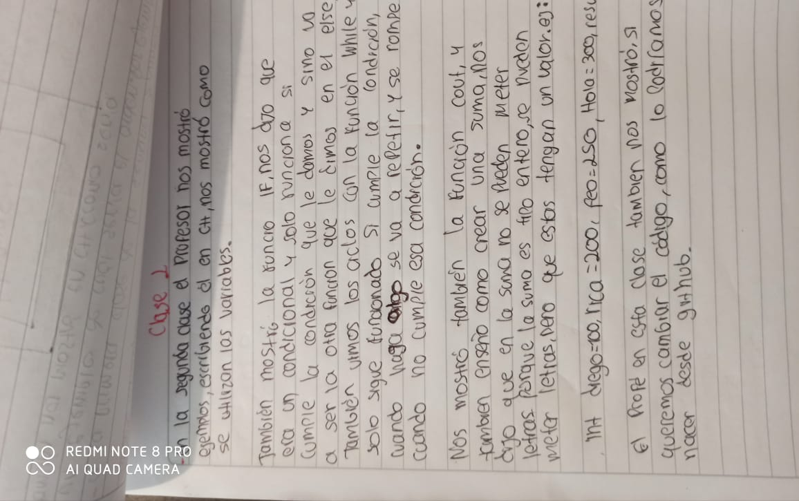
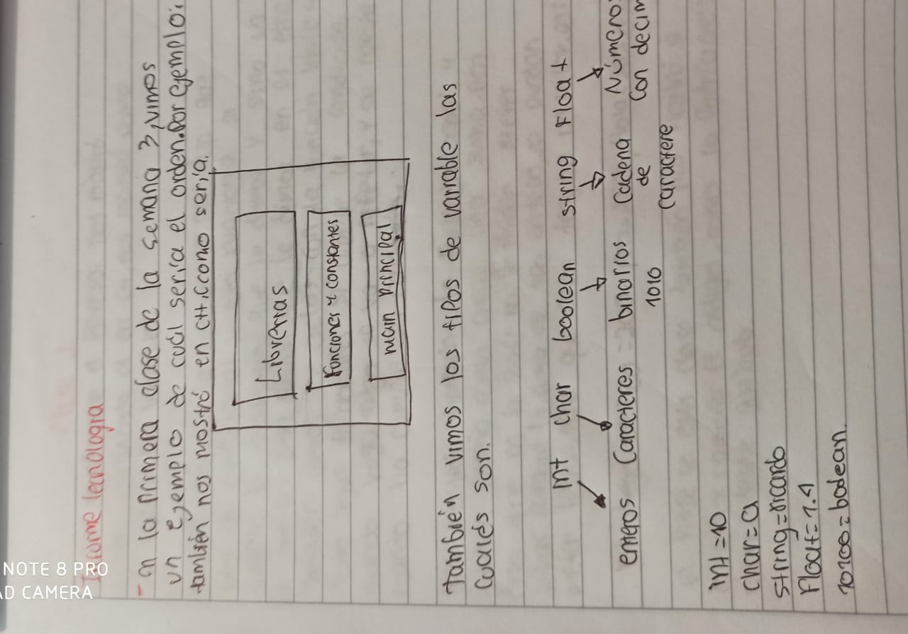
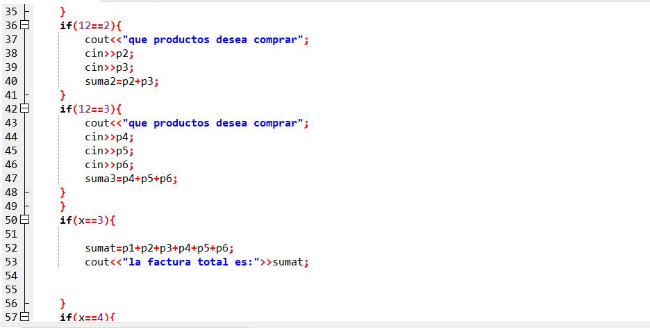
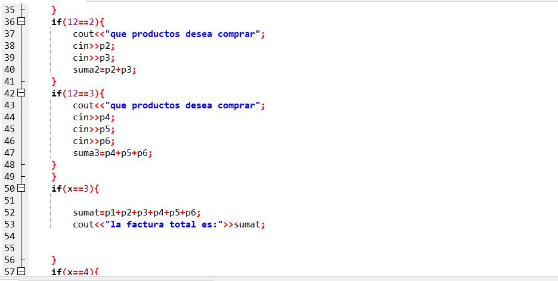
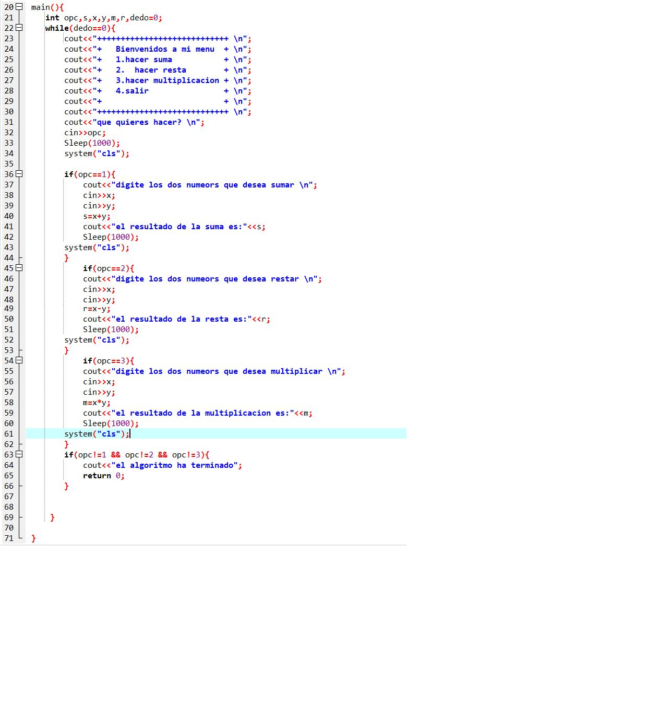

Informe semana 3


volver
parcial
 


la verdad me senti muy confundido, no sabia como hacerlo, en que posicion, lo hice lo mejor posible y espero mejorar en el tema de la programacion
actividad3

este ejercicio me parecio muy facil, ya que estuve atento a la clase, me demore 20 minutos hacerlo y no me dio mayor dificultad, me entretuve haciendolo y me parecio divertido